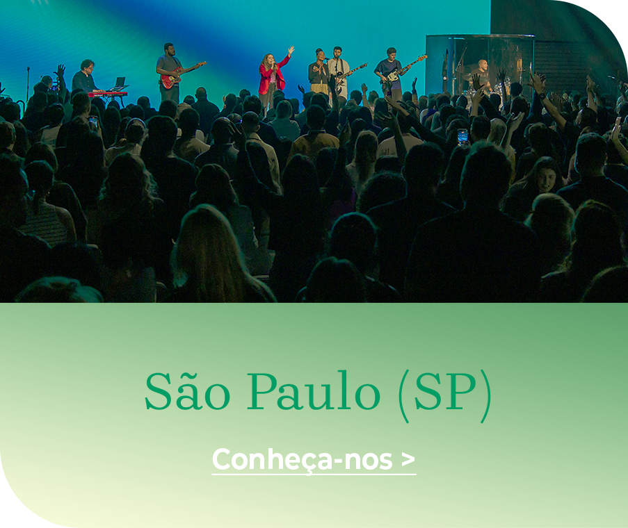

Vida
em comunhão

Koinonia é a palavra bíblica para comunhão: partilhar a vida, a fé e a mesa. Na Shalom, ela acontece nas casas, nas células e em cada culto, onde ninguém caminha sozinho.
Aqui você é conhecido pelo nome, acolhido nas suas lutas e celebrado nas suas vitórias. Não é sobre eventos, é sobre pessoas vivendo o Reino de Deus juntas.
Perseveravam na comunhão, no partir do pão e nas orações, com alegria e singeleza de coração
Vida em comunhão
encontre uma célula